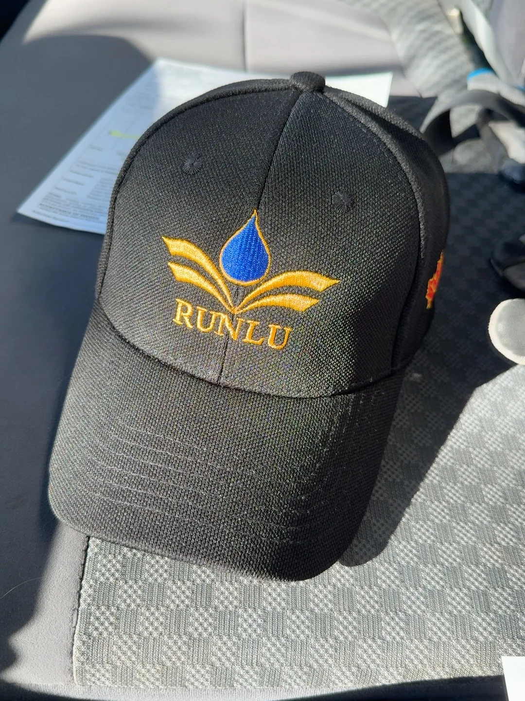
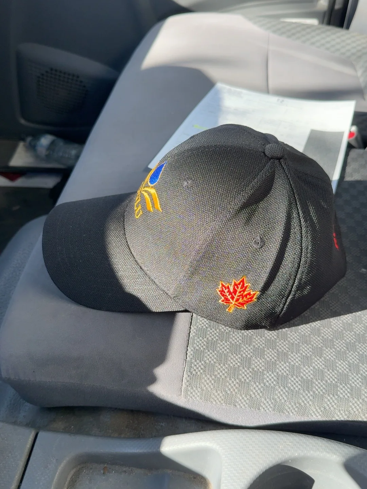
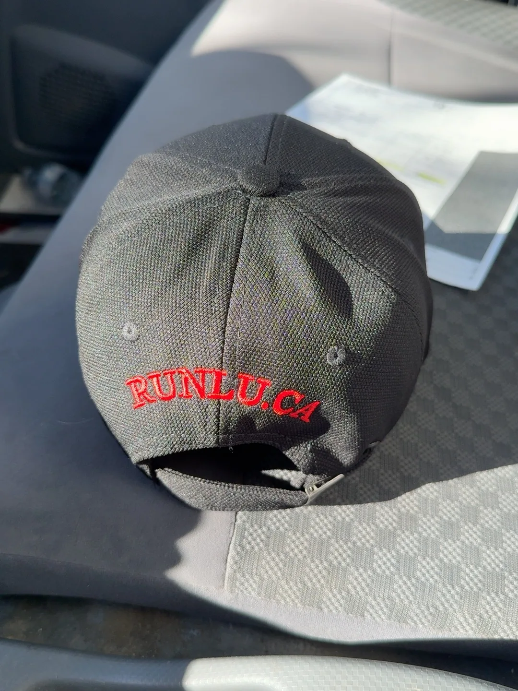

RUNLU Chronicle · October 2026
From a Drawing to Something Real.
RUNLU’s original embroidered cap has arrived as a physical object. Its black fabric carries the blue droplet, golden pages and RUNLU wordmark; a Canadian maple leaf and RUNLU.CA complete the details.
It is a small but meaningful step from digital work into the tangible world. This page records the actual first-run cap, not a rendering or a promise of future merchandise.
For now, this is a brand archive and product study—not a sales listing.
从设计图，到手中的实物。
润庐原创刺绣品牌帽终于有了真实成品。黑色帽身上，蓝色水滴、金色书页与 RUNLU 字样相互映衬；加拿大枫叶与 RUNLU.CA 则留在帽子的侧面和背面。
从数字作品走向可以触摸的实物，这是润庐成长过程中的一个小小里程碑。这里记录的是首批真实成品，而非效果图，也不是未来商品的承诺。
目前仅作品牌档案与产品展示，尚未开放销售。
Du dessin à l’objet réel.
La première casquette brodée RUNLU est devenue un objet tangible. Sur le tissu noir se retrouvent la goutte bleue, les pages dorées et le nom RUNLU, avec une feuille d’érable canadienne et RUNLU.CA sur les autres faces.
Cette petite étape marque le passage du numérique à l’objet physique. Il s’agit de la première réalisation, et non d’un rendu conceptuel.
Cette page est une archive de marque, sans vente pour le moment.
Del diseño a un objeto real.
La primera gorra bordada de RUNLU ya es una realidad. Sobre la tela negra aparecen la gota azul, las páginas doradas y el nombre RUNLU; una hoja de arce canadiense y RUNLU.CA completan los detalles.
Es un pequeño hito en el paso de las creaciones digitales a los objetos tangibles. Aquí se documenta el primer producto real, no una representación digital.
Por ahora, esta página es un archivo de marca, no una tienda.



The RUNLU Eye · Afterword
After our first RUNLU cap became real, we noticed something unexpected. Worn above the brow, the blue droplet framed by golden pages looked a little like the third eye of Erlang Shen, a figure from Chinese mythology.
What began as a joke became a question: if RUNLU had an eye, what would we hope it could see?
Not through other people, nor into fate, but beyond familiar boundaries—toward possibilities not yet imagined.
The blue droplet still stands for inspiration, and the golden pages for knowledge. Now we have found one more way to understand them.
The RUNLU Eye — Not to see through others, but to see beyond the known.
Some meanings are not assigned when something is designed. They are discovered as the work enters the world.
后记｜润庐之眼
第一顶 RUNLU 帽子诞生之后，我们有了一个意外的发现。
当蓝色水滴落在额头上方，左右金色书页舒展开来，它竟让人联想到中国神话中二郎神眉心的第三只眼。
这原本只是一个玩笑，却引出了一番认真的思考。
如果润庐也有一只眼睛，我们希望它看见什么？
不是看穿别人，不是预知命运，而是越过习惯的边界，发现那些尚未被看见的可能。
蓝色水滴依然象征灵感，金色书页依然象征知识。只是从此，我们又多了一种理解它们的方式。
润庐之眼，不为洞察世人，只为看见未见的世界。
有些意义，不是设计之初就赋予的，而是在作品诞生之后，被生活慢慢发现的。
L’œil de RUNLU · Postface
Lorsque notre première casquette RUNLU est devenue réelle, nous avons remarqué un détail inattendu : portée au-dessus du front, la goutte bleue entourée de pages dorées évoquait le troisième œil d’Erlang Shen, personnage de la mythologie chinoise.
Ce qui n’était qu’une plaisanterie a fait naître une question : si RUNLU avait un œil, que souhaiterions-nous qu’il voie ?
Non pas les secrets des autres ni l’avenir, mais les possibilités qui se trouvent au-delà de nos habitudes.
La goutte bleue symbolise toujours l’inspiration, et les pages dorées, le savoir. Nous avons simplement découvert une autre manière de les regarder.
L’œil de RUNLU : non pour percer les autres à jour, mais pour voir au-delà du connu.
Certains sens ne naissent pas au moment de la création : ils se révèlent lorsque l’œuvre entre dans la vie.
El ojo de RUNLU · Epílogo
Cuando nuestra primera gorra RUNLU se hizo realidad, descubrimos algo inesperado: sobre la frente, la gota azul enmarcada por páginas doradas recordaba al tercer ojo de Erlang Shen, una figura de la mitología china.
Lo que comenzó como una broma nos llevó a una pregunta: si RUNLU tuviera un ojo, ¿qué querríamos que viera?
No los secretos de otras personas ni el destino, sino las posibilidades que existen más allá de lo conocido.
La gota azul sigue representando la inspiración y las páginas doradas, el conocimiento. Simplemente hemos descubierto otra forma de interpretarlas.
El ojo de RUNLU: no para ver a través de los demás, sino para mirar más allá de lo conocido.
Hay significados que no se deciden al diseñar algo: aparecen cuando la obra comienza a formar parte de la vida.